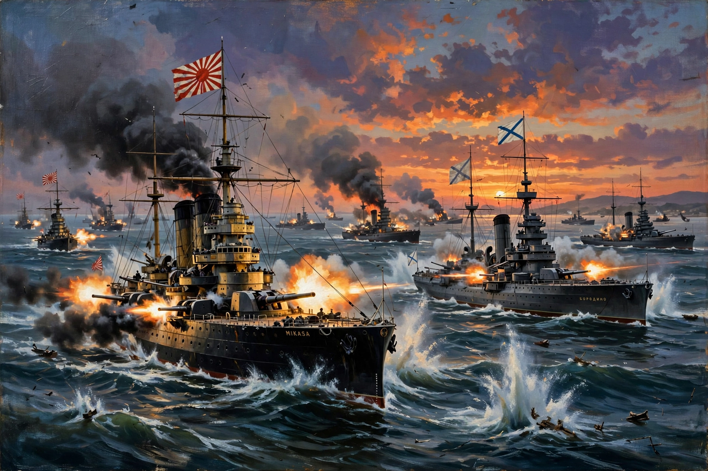

Russo-Japanese War
| Date | 8 February 1904 – 5 September 1905 |
|---|---|
| Location | Manchuria, Korea, Yellow Sea, Sea of Japan |
| Belligerents | Empire of Japan; Russian Empire |
| Result | Japanese victory; Treaty of Portsmouth |

The Russo-Japanese War (1904–1905) was fought between the Russian Empire and the Empire of Japan over rival imperial ambitions in Manchuria and Korea. It began with a surprise Japanese naval attack on the Russian Pacific Squadron at Port Arthur and ended with the annihilation of Russia's Baltic Fleet at the Battle of Tsushima. Japan's victory — the first modern defeat of a European great power by an Asian state — transformed the balance of power in East Asia and had worldwide repercussions.
Origins
After the First Sino-Japanese War, Russia had forced Japan to return the Liaodong Peninsula and then leased it for itself, building the ice-free naval base of Port Arthur and extending the Trans-Siberian Railway across Manchuria. Russian occupation of Manchuria after the Boxer Rebellion and encroachment on Korea collided with Japanese interests. Negotiations broke down, and on the night of 8–9 February 1904 Japanese destroyers torpedoed the Russian squadron at Port Arthur before a declaration of war.
Major battles
Japanese armies advanced through Korea and southern Manchuria, winning at the Yalu River and besieging Port Arthur, which fell in January 1905 after costly assaults under General Nogi Maresuke. The largest land battle, at Mukden in February–March 1905, involved over half a million men and ended in a Russian withdrawal. In May 1905 Admiral Tōgō Heihachirō's Combined Fleet destroyed the Russian Baltic Fleet — which had sailed halfway around the world — at Tsushima, one of the most decisive naval victories in history.
Treaty of Portsmouth and consequences
U.S. President Theodore Roosevelt mediated the Treaty of Portsmouth (September 1905), for which he received the Nobel Peace Prize. Russia recognized Japan's paramount interests in Korea, transferred the Liaodong lease and the South Manchuria Railway, and ceded southern Sakhalin. The absence of a cash indemnity provoked rioting in Tokyo. The war weakened the Tsarist regime, contributing to the Russian Revolution of 1905, and confirmed Japan's status as a great power.